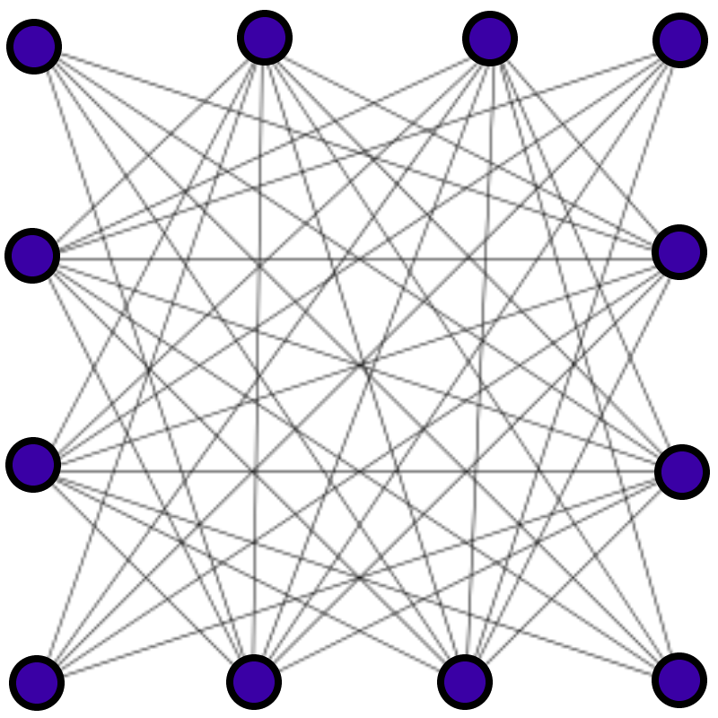

Architecture¶

Pictured Above: A detailed diagram of Netmaker’s Architecture.
Core Concepts¶
Familiarity with several core concepts will help when you encounter them later on in the documentation.
WireGuard¶
WireGuard is a relatively new but very important technology which was recently added to the Linux kernel. WireGuard creates very fast but simple encrypted tunnels between devices. From the WireGuard website, “it might be regarded as the most secure, easiest to use, and simplest VPN solution in the industry.”
Previous solutions like OpenVPN and IPSec are considerably more heavy and complex, while being less performant. All existing VPN tunneling solutions will cause a significant increase in your network latency. WireGuard is the first to achieve near over-the-line network speeds, meaning you see no significant performance impact. With the release of WireGuard, there is little reason to use any other existing tunnel encryption technology.
Mesh Network¶
When we refer to a mesh network in these documents we are typically referring to a “full mesh.”
{kind=link}
A full mesh network exists where each machine is able to directly talk to every other machine on the network. For example, on your home network, behind your router, all the computers are likely given private addresses and can reach each other directly.
This is in contrast to a hub-and-spoke network, where each machine must first pass its traffic through a relay server before it can reach other machines.
In certain situations you may either want or need a partial mesh network, where only some devices can reach each other directly, and other devices must route their traffic through a relay/gateway. Netmaker can use this model in some use cases where it makes sense. In the diagram at the top of this page, the setup is a partial mesh, because the servers (nodes A-D) are meshed, but then external clients come in via a gateway, and are not meshed.
Mesh networks are generally faster than other topologies, but are also more complicated to set up. WireGuard on its own gives you the means to create encrypted tunnels between devices, but it does not provide a method for setting up a full network. This is where Netmaker comes in.
Netmaker¶
Netmaker is a platform built off of WireGuard which enables users to create mesh networks between their devices. Netmaker can create both full and partial mesh networks depending on the use case.
When we refer to Netmaker in aggregate, we are typically referring to Netmaker and the netclient, as well as other supporting services such as CoreDNS, rqlite, and UI webserver. There is also almost always a proxy server / LB, which is typically Caddy.
From an end user perspective, they typically interact with the Netmaker UI, or even just run the install script for the netclient on their devices. The other components run in the background invisibly.
Netmaker does a lot of work to set configurations for you, so that you don’t have to. This includes things like WireGuard ports, endpoints, public IPs, keys, and peers. Netmaker works to abstract away as much of the network management as possible, so that you can just click to create a network, and click to add a machine to a network. That said, every machine (node) is different, and may require special configuration. That is why, while Netmaker sets practical default settings, everything within Netmaker is fully configurable.
Node¶
A machine in a Netmaker network, which is managed by the Netclient, is referred to as a Node, as you will see in the UI. A Node can be a VM, a bare metal server, a desktop computer, an IoT device, or any other number of internet-connected machines on which the netclient is installed. A node is simply an endpoint in the network, which can send traffic to all the other nodes, and receive traffic from all of the other nodes.
SystemD¶
SystemD is a system service manager for a wide array of Linux operating systems. Not all Linux distributions have adopted systemd, but, for better or worse, it has become a fairly common standard in the Linux world. That said, any non-Linux operating system will not have systemd, and many Linux/Unix distributionshave alternative system service managers.
Netmaker’s netclient, the agent which controls networking on all nodes, can be run as a CLI or as a system daemon. On Linux, it runs as a daemon by default, and this requires systemd. As Netmaker evolves, systemd will become just one of the possible service management options, allowing the netclient to be run on a wider array of devices. However, for the time being, the netclient should be run “unmanaged” (netclient join -daemon=off) on systems that do not run systemd, and some other method can be used like a cron job or custom script.
As of 0.8, Mac and Windows are supported. On these operating systems, netclient launches the daemon using LaunchD and Windows Service, respectively, as opposed to SystemD.
Components¶
Netmaker consists of several core components, which are explained in high-level technical detail below.
Netmaker Server¶
The Netmaker server is, at its core, a golang binary. Source code can be found on GitHub. The binary, by itself can be compiled for most systems. If you need to run the Netmaker server on a particular system, it likely can be made to work. In typical deployments, it is run as a Docker container. It can also be run as a systemd service as outlined in the non-docker install guide.
The Netmaker server acts as an API to the front end, and as a GRPC server to the machines in the network. GRPC is much faster and more efficient than standard API calls, which increases the speed of transactions. For this reason, the Netmaker server exposes two ports: The default for the API is 8081, and the default for GRPC is 50051. Either the API or the GRPC server can be disabled on any given Netmaker instance, allowing you to deploy two different servers for managing the API (which is largely for the admin’s use) and GRPC (which is largely for the nodes’ use).
Most server settings are configurable via a config file, or by environment variables (which take precedence). If the server finds neither of these, it sets sensible defaults, including things like the server’s reachable IP, ports, and which “modes” to run in.
These modes include client mode and dns mode. Either of these can be disabled but are enabled by default. Client mode allows you to treat the Netmaker host machine (operating system) as a network Node, installing the netclient and controlling the host network. DNS mode has the server write config settings for CoreDNS, a separate component and nameserver, which picks up the config settings to manage node DNS.
The Netmaker server interacts with either sqlite (default), postgres, or rqlite, a distributed version of sqlite, as its database. This DB holds information about nodes, networks, users, and other important data. This data is configuration data. For the most part, Netmaker serves configuration data to Nodes, telling them how they should configure themselves. The Netclient is the agent that actually does that configuration.
The components of the server are usually proxied via Caddy, or an alternative like Nginx and Traefik. The proxy handles SSL certificates to secure traffic, and routes to the UI, API, and gRPC server.
Netclient¶
The netclient is, at its core, a golang binary. Source code can be found in the netclient folder of the Netmaker GitHub Repository. The binary, by itself, can be compiled for most systems. However, this binary is designed to manage a certain number of Operating Systems. As of version 0.8, the netclient can be run as a system daemon on linux distributions with systemd, or as an “unmanaged” client on distributions without systemd. The netclient for Windows and Mac will run as a Windows Service or LaunchDaemon, respectively.
The netclient is installed via a simple bash script, which pulls the latest binary and runs ‘register’ and ‘join’ commands.
The ‘register’ command adds a WireGuard tunnel directly to the netmaker server, for all subsequent communication.
The ‘join’ command attempts to add the machine to the Netmaker network using sensible defaults, which can be overridden with a config file or environment variables. Assuming the netclient has a valid key (or the network allows manual node signup), it will be registered into the Netmaker network, and will be returned necessary configuration details for how to set up its local network.
The netclient then sets up the system daemon (if running in daemon mode), and configures WireGuard. At this point it should be part of the network.
If running in daemon mode, the node subscribes to the MQTT server running with Netmaker, which will send it periodic updates when the network changes. The node will also detect local changes and send them to the server. Any change in configuration will lead to a network update to keep everything in sync. If the node is not running with the in daemon on, it is up to the operator to keep the netclient up-to-date by running regular “pulls” (netclient pull).
This pub-sub system allows Netmaker to create dynamic mesh networks. As nodes are added to, removed from, and modified on the network, other nodes are notified, and make appropriate changes.
Database (sqlite, rqlite, postgres)¶
As of v0.8, Netmaker uses sqlite by default as a database. It can also use PostgreSQL, or rqlite, a distributed (RAFT consensus) database. Netmaker interacts with this database to store and retrieve information about nodes, networks, and users.
Additional database support (besides sqlite and rqlite) is very easy to implement for special use cases. Netmaker uses simple key value lookups to run the networks, and the database was designed to be extensible, so support for key-value stores and other SQL-based databases can be achieved by changing a single file.
Netmaker UI¶
The Netmaker UI is a ReactJS-based static website which can be run on top of standard webservers such as Apache and Nginx. Source code can be found here. In a typical configuration, the Netmaker UI is run on Nginx as a Docker container.
Netmaker can be used in its entirety without the UI, but the UI makes things a lot easier for most users. It has a sensible flow and layout for managing Networks, Nodes, Access Keys, and DNS.
CoreDNS¶
Netmaker allows users to provide and manage Private DNS for their nodes. This requires a nameserver, and CoreDNS is the chosen nameserver. CoreDNS is lightweight and extensible. CoreDNS loads dns settings from a simple file, managed by Netmaker, and serves out DNS info for managed nodes. DNS can be tricky, and DNS management is currently only supported on a small set of devices, specifically those running systemd-resolved. However, the Netmaker CoreDNS instance can be added manually as a nameserver to other devices. DNS mode can also be turned off.
Caddy¶
Caddy is the default proxy for Netmaker if you set it up via Quick Start. Caddy is an extremely simple and docker-friendly proxy, which can be compared to Nginx, Traefik, or HAProxy. We use Caddy by default because of the ease of management, and integration with gRPC. A typical setup for Nginx might take dozens of lines of code, and we need to request and manage SSL certificates separately.
Caddy handles all these things automatically in very few lines of code. You can see our default “Caddyfile” here, which is fed to the container and has all the configuration necessary to configure the proxy for our app:
https://github.com/gravitl/netmaker/blob/master/docker/Caddyfile
Mosquitto Broker (MQTT)¶
The Moquitto broker is the default MQTT broker that ships with Netmaker, though technically, any MQTT broker should work so long as the correct configuration is applied. The broker enables the establishment of a pub-sub messaging system, whereby clients subscribe to recieve updates. When the server recieves a change (via API/UI/gRPC), it will publish that change to the broker that pushes out the change to the appropriate nodes. In Netmaker, the messages are double encrypted. Once by Golang, and again by sending all messages over a WireGuard tunnel.
External Client¶
The external client is simply a manually configured WireGuard connection to your network, which Netmaker helps to manage.
Most machines can run WireGuard. It is fairly simple to set up a WireGuard connection to a single endpoint. It is setting up mesh networks and other topologies like site-to-site which becomes complicated.
Mac, Windows, and Linux are handled natively by the Netclient.
Netmaker can issue “external clients” to handle any devices which are not currently compatible with the netclient, including iPhone, Android, and some Unix distributions. Over time, this list will be eliminated and there may not even be a need for the external client.
External clients hook into a Netmaker network via an “Ingress Gateway,” which is configured for a given node and allows traffic to flow into the network.
Technical Process¶
Below is a high level, step-by-step overview of the flow of communications within Netmaker (assuming Netmaker has already been installed):
Admin creates a new network with a subnet, for instance 10.10.10.0/24
Admin creates an access key for signing up new nodes
Both of the above requests are routed to the server via an API call from the front end
Admin runs the netclient install script on any given node (machine).
Netclient decodes key, which contains the server location
Netclient gathers and sets appropriate information to configure itself as a node: it generates key pairs, gets public and local addresses, and sets a port.
Netclient sends this information to the server, authenticating with its access key
Netmaker server verifies information and creates the node, setting default values for any missing information, and returns a response.
Upon successful registration, Netclient pulls the latest peers list from the server and set up a WireGuard interface
Netclient configures itself as a daemon (if joining for the first time) and subscribes to MQ using the server’s WireGuard address.
Netclient regularly retrieves local information, checking for changes in things like IP and keys. If there is a change, it pushes them to the server.
If a change occurs in any other peer, or peers are added/removed, an update will be sent to the Netclient via MQ, and it will re-configure WireGuard.
Compatible Systems for Netclient¶
To manage a node manually, the Netclient can be compiled and run for most linux distibutions, with a prerequisite of WireGuard with kernel headers. If the netclient from the release pages does not run natively on your system, you may need to compile the netclient binary directly on the machine from the source code. This may be true for some installations of SUSE, Fedora, and some Debian-based systems. However, if the dependencies are installed on the machine, the netclient should run correctly after being compiled.
Simply clone the repo, cd to netmaker/netclient and run “go build” (Golang must be installed).
- The following systems should be operable natively with Netclient in daemon mode:
Windows
Mac
FreeBSD
OpenWRT
Fedora
Ubuntu
Debian
Mint
SUSE
RHEL
Raspian.
Arch
CentOS
Fedora CoreOS
- To manage DNS (optional), the node must have systemd-resolved. Systems that have this enabled include:
Arch
Debian
Ubuntu
SUSE
Limitations¶
Install limitations mostly include platform-specific dependencies. A failed netclient install should display information about which command is failing, or which libraries are missing. This can often be solved via machine upgrade, installing missing dependencies, or setting kernel headers on the machine for WireGuard (e.x.: Installing Kernel Headers on Debian)